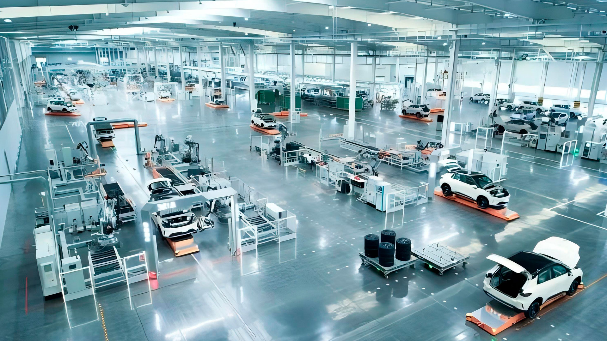
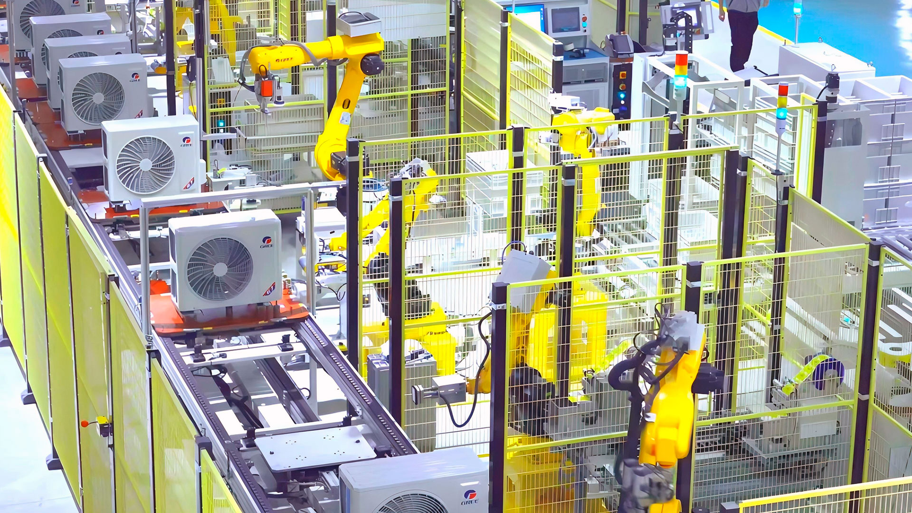
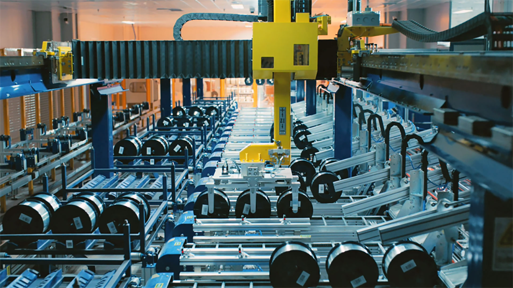
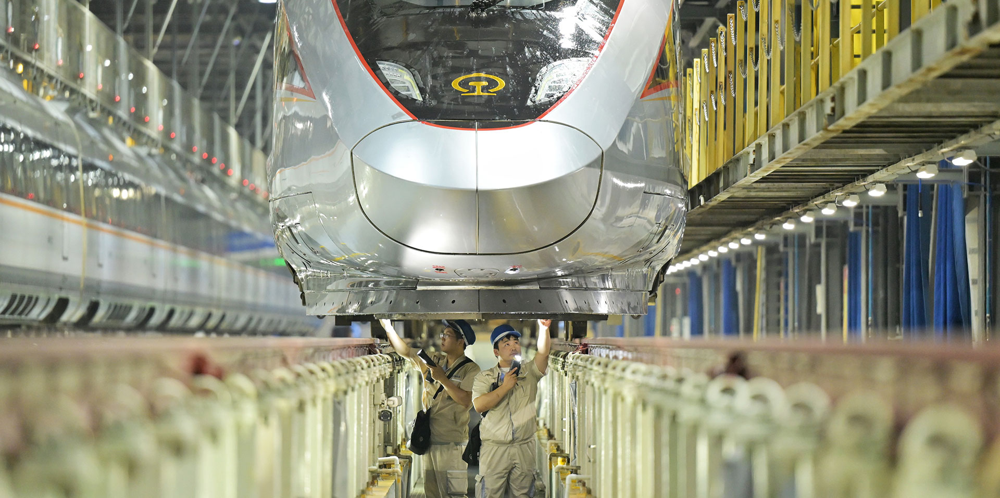

Fábricas inteligentes exploran nuevos modelos de fabricación en toda China
Los automóviles ya no tienen que construirse en una línea de ensamblaje tradicional. En China, la producción se organiza cada vez más en torno a lo que se conoce como 'islas de fabricación'

Isla inteligente en un taller de la empresa conjunta SAIC-GM-Wuling (P. D.)
Liu Wenxin y Zhu Jiaqi
27/2/2026
Un sistema de fabricación basado en islas inteligentes funciona en el taller de carrocerías de la empresa mixta SAIC-GM-Wuling ubicado en Liuzhou, región autónoma de la etnia zhuang de Guangxi. Las "islas inteligentes" operan procesos de manera independiente, pero permanecen interconectadas. Unidas, trabajan tres grandes grupos de islas que permiten la producción mixta y eficiente de 24 modelos distintos de vehículos. “Las líneas tradicionales son rígidas como carreteras de un solo sentido”, explica Cai Lin, ingeniera de procesos. “Nuestro sistema de islas ofrece flexibilidad tipo Lego para reducir la inversión en equipos en un 40 por ciento.”
Para construir una fábrica inteligente que pueda pensar y evolucionar, SAIC-GM-Wuling adoptó un modelo operativo impulsado por IA desarrollado internamente. Este sistema permite un uso altamente coordinado de los recursos en toda la cadena industrial, desde la programación de la producción y el almacenamiento hasta la distribución de materiales. El nivel general de inteligencia de la fábrica ronda el 75 por ciento.
Un 30 por ciento más eficiente
Desde la finalización a finales del 2023 de la fábrica inteligente basada en islas, la eficiencia de la fabricación ha aumentado en un 30 por ciento; el tiempo de cambio de modelo en la carrocería se ha reducido en un 67 por ciento; y la inversión en la fabricación de nuevos productos se ha reducido en un 30 por ciento.
Fábrica inteligente de Gree Electric Appliances (P. D.)
En 2025, el valor de producción de la empresa superó una vez más los 100 mil millones de yuanes (14,38 mil millones de dólares), con un aumento del 24 por ciento interanual, mientras que las ventas anuales de vehículos de nueva energía superaron por primera vez el millón de unidades, verificando un incremento interanual del 31,9 por ciento.
Basada en el desacoplamiento de procesos y la reestructuración de líneas de producción, la fábrica inteligente SAIC-GM-Wuling es una de las 15 emblemáticas del país. China está acelerando actualmente la transformación digital e inteligente de su sector manufacturero. Desde 2024, seis departamentos gubernamentales, incluido el Ministerio de Industria y Tecnología de la Información, han lanzado conjuntamente una acción de cultivo gradual de fábricas inteligentes durante dos años consecutivos, desarrollándolas en cuatro niveles.
Hasta la fecha, China ha construido más de 35.000 fábricas inteligentes de nivel básico, más de 8.200 instalaciones de nivel avanzado, más de 500 fábricas de nivel de excelencia y 15 fábricas inteligentes emblemáticas.
Exploración continua
Seleccionadas como las mejores entre las mejores, el primer grupo de fábricas inteligentes de China abarca sectores clave como la fabricación de equipos, materias primas e información electrónica, ubicadas en 10 regiones a nivel provincial, como Shanghai, Jiangsu, Zhejiang, Shandong y Hubei.Wang Minghui, director de la Oficina de Investigación Industrial del Centro de Investigación y Desarrollo del Consejo de Estado de China, señaló que las fábricas inteligentes emblemáticas integran tecnologías avanzadas de fabricación, tecnologías de información de próxima generación y conceptos de gestión ajustada (Lean Management). Con la tarea de explorar modelos de fabricación futuros, representan la cima de la pirámide de la manufactura inteligente de China.
El valor central de las fábricas inteligentes radica en remodelar la lógica de producción y desbloquear el impulso industrial. Las fábricas inteligentes insignia en China están explorando continuamente nuevos modelos de manufactura en la práctica, desde plantas automotrices que logran una producción flexible de modelos mixtos, hasta instalaciones petroquímicas que operan de manera autónoma mediante gemelos digitales, y plantas de fibra óptica que superan los límites de la fabricación de preformas de gran tamaño.

Fábrica inteligente de YOFC (P. D.)
Por ejemplo, Gree Electric Appliances, un fabricante líder chino de electrodomésticos, ha logrado una cobertura digital completa en su fábrica inteligente insignia, duplicando la eficiencia de producción. La fábrica insignia de Yangtze Optical Fibre and Cable Joint Stock Limited Company (YOFC), un proveedor chino de preformas ópticas, fibras y cables, ha integrado completamente la IA en todo su proceso de producción, permitiendo un control de precisión a nivel micrónico a temperaturas superiores a 2.000 grados Celsius. Su línea de estirado de fibra alcanza una velocidad líder mundial de 3.500 metros por minuto, sin necesidad de intervención humana.
Quince fábricas inteligentes emblemáticas
Las estadísticas demuestran que en las 15 fábricas inteligentes emblemáticas, la eficiencia promedio de producción ha aumentado en un 29 por ciento, mientras que la tasa de defectos de los productos ha disminuido en un 47 por ciento. Mientras tanto, la IA se ha aplicado en más del 70 por ciento de los escenarios comerciales en estas fábricas, dando lugar a más de 6,000 modelos de dominio vertical y ha impulsado la aplicación a gran escala de más de 1.700 sistemas clave de equipos de fabricación inteligentes y soluciones de software industrial.Cabe destacar que las fábricas inteligentes están generando efectos multiplicadores que impulsan cada vez más la colaboración industrial. Las 15 fábricas inteligentes emblemáticas ya no son solo productoras de artículos de alta gama. En la actualidad están evolucionando hacia proveedores integrales de productos, servicios y soluciones, impulsando una transformación industrial más amplia. Hasta la fecha, han facilitado mejoras coordinadas en más de 1.300 empresas de la cadena ascendente (upstream) y de la cadena descendente (downstream), aumentando de esta forma el valor a lo largo de toda la cadena industrial.
OTROS TEMAS
Algodón
Una cosechadora de algodón en Xinjiang
La tecnología impulsa el desarrollo de la industria algodonera de Xinjiang
En la principal región productora de algodón del país, la producción superó por primera vez los seis millones de toneladas y alcanzó el 92,8 % del total nacional
Leer más ->
Investigación

Montaje de la estructura de la Estación Qinling
Con el equipo chino de la Estación Qinling, en la Antártida
Treinta y dos trabajadores de la construcción permanecen durante el invierno en la quinta estación de investigación de China en este continente
Leer más ->
Automoción

Vehículos validan su rendimiento
Yakeshi se reinventa con nuevas experiencias
Situada en la Mongolia interior, esta ciudad especializada en las pruebas automovilísticas de invierno ha pasado a convertirse en un centro integral de la industria de hielo y nieve
Leer más ->
Ruido

Un parque urbano de Wuhu
Paso firme en el control de la contaminación acústica
Aumenta el porcentaje de áreas urbanas que cumplen con los estándares nacionales de ruido diurno y nocturno, reflejando la 'determinación estratégica' de China en lograr su reducción
Leer más ->

Las fábricas inteligentes de China abarcan todos los sectores clave (P. D.)
Créditos
Producción: Edicions Clariana SL | Redacción: People's Daily digital | Diseño: Martí Palma | Maquetación: Enric Abad | Fotografías: People's Daily Digital
Un proyecto de Brandslab. Godó Nexus